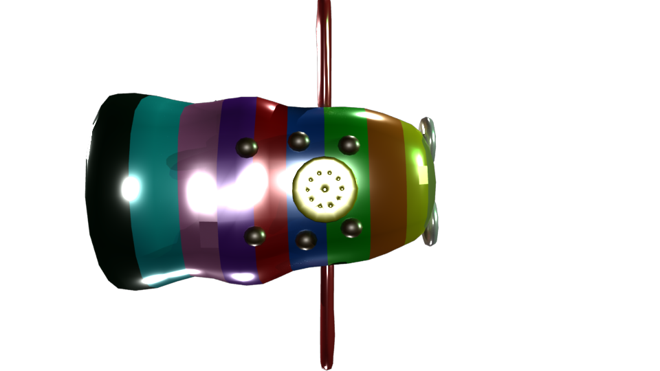
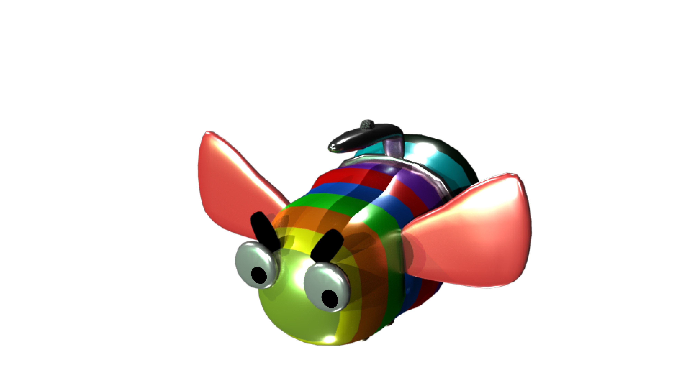

Project Analysis
Overview
This is the 3D model I made for an idea of a flashlight. The outlook of this flashlight is inspired by bee and I tried to make it colourful since it is made for children.There are different sound effects and different colours of lights. In addition, there are numerous buttons that could be interacted, such as the eyebrows, the wings, the feet and the main button on the handle.

Audiences
This flashlight is designed for kids from 3 to 8, which tend to have some educational use. I added six different sound effects of insects, which tend to help children learning about insects. In addition, the moveable eyebrows and wings are playful enough for young kids.
Goal
This bee flashlight tend to practice practical ability and learn the sounds of different animals and insects. The changing ligh and moveable elements could make the whole learning process interesting.
Iteraction
The flashligh could be categorized as a material design product. It starts with a lot of researches on the material. After getting the property of several different materials, I chose two of them as the main ones. The shape of the flashlight is also considerable. I tended to make this interesting and attracvtive by young children.

Design Challenges
Since bee flashlight is designed for young children, there are numerous aspects the desiger should considered, such as safety, toxicity, cost, etc. I did some research for user experience for this project and I found it is good to use plastic or rubber for this flashlight. Rubber is less scratchable and safe for young children, however, it could be too heavy for children's wrists. Plastic is a good material as well. It is inexpensice and elastic, whereas it is much easier broken than rubber. Moreover, young children might be molar in such a young age, therefore, plastic might not good for their health and easy to be broken. This is the biggest challenge during design.